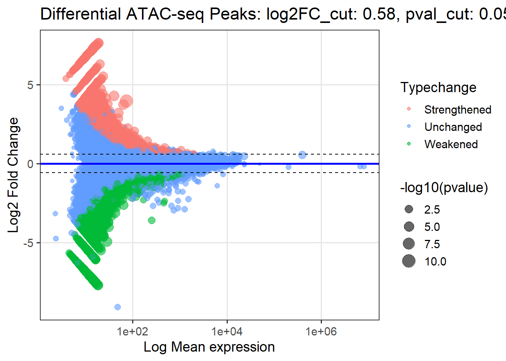
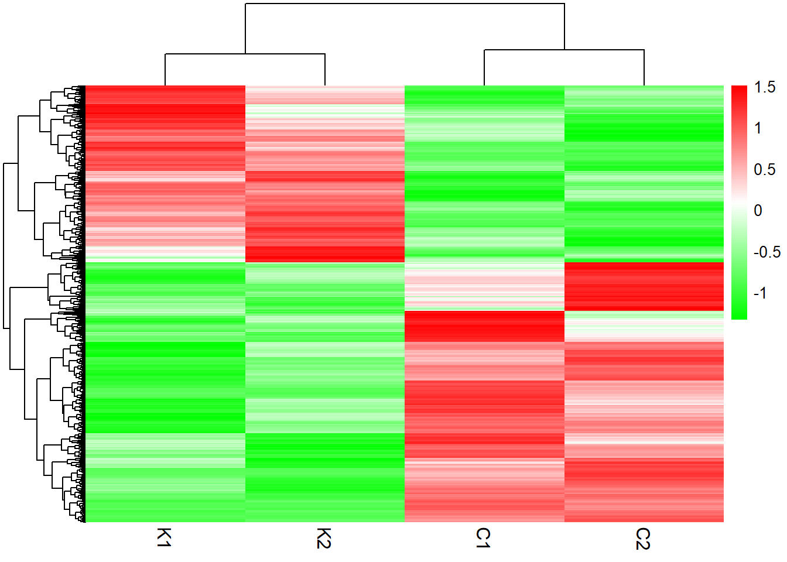

Last updated: 2026-02-09
Checks: 6 1
Knit directory: autism_epigenetics/
This reproducible R Markdown analysis was created with workflowr (version 1.7.1). The Checks tab describes the reproducibility checks that were applied when the results were created. The Past versions tab lists the development history.
The R Markdown file has unstaged changes. To know which version of
the R Markdown file created these results, you’ll want to first commit
it to the Git repo. If you’re still working on the analysis, you can
ignore this warning. When you’re finished, you can run
wflow_publish to commit the R Markdown file and build the
HTML.
Great job! The global environment was empty. Objects defined in the global environment can affect the analysis in your R Markdown file in unknown ways. For reproduciblity it’s best to always run the code in an empty environment.
The command set.seed(20251118) was run prior to running
the code in the R Markdown file. Setting a seed ensures that any results
that rely on randomness, e.g. subsampling or permutations, are
reproducible.
Great job! Recording the operating system, R version, and package versions is critical for reproducibility.
Nice! There were no cached chunks for this analysis, so you can be confident that you successfully produced the results during this run.
Great job! Using relative paths to the files within your workflowr project makes it easier to run your code on other machines.
Great! You are using Git for version control. Tracking code development and connecting the code version to the results is critical for reproducibility.
The results in this page were generated with repository version 5e48e7e. See the Past versions tab to see a history of the changes made to the R Markdown and HTML files.
Note that you need to be careful to ensure that all relevant files for
the analysis have been committed to Git prior to generating the results
(you can use wflow_publish or
wflow_git_commit). workflowr only checks the R Markdown
file, but you know if there are other scripts or data files that it
depends on. Below is the status of the Git repository when the results
were generated:
Unstaged changes:
Modified: analysis/figure1_analysis.Rmd
Note that any generated files, e.g. HTML, png, CSS, etc., are not included in this status report because it is ok for generated content to have uncommitted changes.
These are the previous versions of the repository in which changes were
made to the R Markdown (analysis/figure1_analysis.Rmd) and
HTML (docs/figure1_analysis.html) files. If you’ve
configured a remote Git repository (see ?wflow_git_remote),
click on the hyperlinks in the table below to view the files as they
were in that past version.
| File | Version | Author | Date | Message |
|---|---|---|---|---|
| Rmd | 5e48e7e | han | 2026-02-09 | 2/9/2026 |
| html | 5e48e7e | han | 2026-02-09 | 2/9/2026 |
| html | 98e85d6 | han | 2026-02-06 | 2/6/2026 |
| Rmd | 85aa352 | han | 2026-02-06 | 2/6/2026 |
| html | 85aa352 | han | 2026-02-06 | 2/6/2026 |
rm(list=ls())
library(rprojroot)
library(dplyr)
root <- rprojroot::find_rstudio_root_file()union_peak_reads_count=read.delim((file.path(root, "../Data/Novogene/PeakWindows/Cere_union_peak_read_counts.tsv")), header=T, stringsAsFactors = FALSE)
dim(union_peak_reads_count)[1] 237934 9head(union_peak_reads_count) chr start end C1 C2 C_merged K1 K2 K_merged
1 chr1 3083877 3084023 21 7 28 6 2 8
2 chr1 3120283 3120658 62 78 140 41 67 108
3 chr1 3128676 3128999 4 4 8 23 30 53
4 chr1 3149871 3150061 31 27 58 7 12 19
5 chr1 3251199 3251666 61 50 111 18 53 71
6 chr1 3300549 3300826 42 22 64 13 8 21#if (!require("BiocManager", quietly = TRUE))
# install.packages("BiocManager")
#BiocManager::install("DESeq2")
#if (!require("BiocManager", quietly = TRUE))
# install.packages("BiocManager")
#BiocManager::install("apeglm")
library(DESeq2)
library(apeglm)
# ----------------------------
# Prepare count matrix
# ----------------------------
count_mat <- as.matrix(
union_peak_reads_count[, c("C1", "C2", "K1", "K2")]
)
rownames(count_mat) <- paste(
union_peak_reads_count$chr,
union_peak_reads_count$start,
union_peak_reads_count$end,
sep = ":"
)
# Ensure integer mode (important for DESeq2)
storage.mode(count_mat) <- "integer"
# ----------------------------
# Sample metadata
# ----------------------------
coldata <- data.frame(
condition = c("C", "C", "K", "K"),
row.names = colnames(count_mat)
)
# ----------------------------
# Create DESeq2 object
# ----------------------------
dds <- DESeqDataSetFromMatrix(
countData = count_mat,
colData = coldata,
design = ~ condition
)
# ----------------------------
# Optional but recommended: filter low counts
# ----------------------------
#keep <- rowSums(counts(dds)) >= 10
#dds <- dds[keep, ]
# ----------------------------
# Run DESeq2
# ----------------------------
dds <- DESeq(dds)
# ----------------------------
# Results: K vs C
# ----------------------------
res <- results(dds, contrast = c("condition", "K", "C"))
head(res)log2 fold change (MLE): condition K vs C
Wald test p-value: condition K vs C
DataFrame with 6 rows and 6 columns
baseMean log2FoldChange lfcSE stat pvalue
<numeric> <numeric> <numeric> <numeric> <numeric>
chr1:3083877:3084023 9.3194 -1.805230 1.457376 -1.238685 0.2154620
chr1:3120283:3120658 60.5243 -0.474142 0.548569 -0.864324 0.3874098
chr1:3128676:3128999 14.6664 2.645541 1.145251 2.310009 0.0208876
chr1:3149871:3150061 19.1308 -1.721634 0.966142 -1.781968 0.0747545
chr1:3251199:3251666 44.1007 -0.808456 0.676084 -1.195794 0.2317771
chr1:3300549:3300826 21.6822 -1.639670 0.957792 -1.711926 0.0869102
padj
<numeric>
chr1:3083877:3084023 0.693042
chr1:3120283:3120658 0.763792
chr1:3128676:3128999 0.565293
chr1:3149871:3150061 0.629236
chr1:3251199:3251666 0.699926
chr1:3300549:3300826 0.637331# Shrink log2FC (recommended for ATAC-seq)
#res_shrunk <- lfcShrink(
# dds,
# contrast = c("condition", "K", "C"),
# type = "apeglm"
#)
# Order by adjusted p-value
#res_shrunk <- res_shrunk[order(res_shrunk$padj), ]
#
#head(res_shrunk)library(dplyr)
library(ggplot2)
log2FC_cut <- 0.38
pval_cut <- 0.05
library(dplyr)
plot_df <- as.data.frame(res) %>%
mutate(
mean_expr = baseMean,
neglogp = -log10(pvalue),
Typechange = case_when(
pvalue < pval_cut & log2FoldChange >= log2FC_cut ~ "Enhanced",
pvalue < pval_cut & log2FoldChange <= -log2FC_cut ~ "Weakened",
TRUE ~ "Unchanged"
)
)
plot_df$neglogp <- pmin(plot_df$neglogp, 15)library(ggplot2)
ggplot(plot_df, aes(x = mean_expr, y = log2FoldChange)) +
geom_point(
aes(color = Typechange, size = neglogp),
alpha = 0.6
) +
scale_x_log10() +
geom_hline(yintercept = 0, color = "blue", linewidth = 1) +
geom_hline(
yintercept = c(-log2FC_cut, log2FC_cut),
linetype = "dashed",
color = "black"
) +
scale_color_manual(
values = c(
"Enhanced" = "#F8766D",
"Weakened" = "#00BA38",
"Unchanged" = "#619CFF"
)
) +
scale_size_continuous(
range = c(1, 6),
name = "-log10(pvalue)"
) +
labs(
x = "Log Mean expression",
y = "Log2 Fold Change",
color = "Typechange"
) +
theme_bw(base_size = 14) +
theme(
panel.grid.major = element_line(color = "grey90"),
panel.grid.minor = element_blank()
)
#################### normalize counts
library(DESeq2)
count_mat <- as.matrix(count_mat)
coldata <- data.frame(
row.names = colnames(count_mat),
condition = c("C", "C", "K", "K")
)
dds <- DESeqDataSetFromMatrix(
countData = count_mat,
colData = coldata,
design = ~ condition
)
# filter low-count peaks (important)
dds <- dds[rowSums(counts(dds)) >= 10, ]
# variance-stabilizing transform
vsd <- vst(dds, blind = TRUE)
mat <- assay(vsd)
mat_scaled <- t(scale(t(mat)))
dds <- DESeq(dds)
res <- results(dds, contrast = c("condition", "K", "C"))
# keep only peaks in matrix
res <- res[rownames(mat_scaled), ]# ----------------------------
# Apply significance cutoffs
# ----------------------------
res_filt <- res[
!is.na(res$pvalue) &
res$pvalue < pval_cut &
abs(res$log2FoldChange) >= log2FC_cut,
]
# Order by effect size
res_filt <- res_filt[
order(abs(res_filt$log2FoldChange), decreasing = TRUE),
]
# Limit size (prevents clustering crash)
topN <- min(5000, nrow(res_filt))
res_filt <- res_filt[1:topN, , drop = FALSE]
# ----------------------------
# Subset matrix (CRITICAL drop=FALSE)
# ----------------------------
mat_filt <- mat_scaled[rownames(res_filt), , drop = FALSE]
gained <- res_filt$log2FoldChange > 0
lost <- res_filt$log2FoldChange < 0
mat_gained <- mat_filt[gained, , drop = FALSE]
mat_lost <- mat_filt[lost, , drop = FALSE]
mat_ordered <- rbind(mat_gained, mat_lost)library(pheatmap)
pheatmap(
mat_ordered,
color = colorRampPalette(c("green", "white", "red"))(100),
cluster_rows = TRUE,
cluster_cols = TRUE,
show_rownames = FALSE,
show_colnames = TRUE,
border_color = NA,
gaps_row = nrow(mat_gained),
fontsize_col = 12
)
sessionInfo()R version 4.4.0 (2024-04-24 ucrt)
Platform: x86_64-w64-mingw32/x64
Running under: Windows 11 x64 (build 26200)
Matrix products: default
locale:
[1] LC_COLLATE=English_United States.utf8
[2] LC_CTYPE=English_United States.utf8
[3] LC_MONETARY=English_United States.utf8
[4] LC_NUMERIC=C
[5] LC_TIME=English_United States.utf8
time zone: America/Chicago
tzcode source: internal
attached base packages:
[1] stats4 stats graphics grDevices utils datasets methods
[8] base
other attached packages:
[1] pheatmap_1.0.12 ggplot2_3.5.1
[3] apeglm_1.26.1 DESeq2_1.44.0
[5] SummarizedExperiment_1.34.0 Biobase_2.64.0
[7] MatrixGenerics_1.16.0 matrixStats_1.3.0
[9] GenomicRanges_1.56.2 GenomeInfoDb_1.40.0
[11] IRanges_2.38.0 S4Vectors_0.42.0
[13] BiocGenerics_0.50.0 dplyr_1.1.4
[15] rprojroot_2.0.4
loaded via a namespace (and not attached):
[1] gtable_0.3.5 xfun_0.43 bslib_0.7.0
[4] lattice_0.22-6 numDeriv_2016.8-1.1 vctrs_0.6.5
[7] tools_4.4.0 generics_0.1.3 parallel_4.4.0
[10] tibble_3.2.1 fansi_1.0.6 highr_0.10
[13] pkgconfig_2.0.3 Matrix_1.7-0 RColorBrewer_1.1-3
[16] lifecycle_1.0.4 GenomeInfoDbData_1.2.12 farver_2.1.2
[19] compiler_4.4.0 stringr_1.5.1 git2r_0.33.0
[22] munsell_0.5.1 codetools_0.2-20 httpuv_1.6.15
[25] htmltools_0.5.8.1 sass_0.4.9 yaml_2.3.8
[28] later_1.3.2 pillar_1.9.0 crayon_1.5.2
[31] jquerylib_0.1.4 whisker_0.4.1 MASS_7.3-60.2
[34] BiocParallel_1.38.0 cachem_1.0.8 DelayedArray_0.30.1
[37] emdbook_1.3.14 abind_1.4-5 bdsmatrix_1.3-7
[40] locfit_1.5-9.12 tidyselect_1.2.1 digest_0.6.35
[43] mvtnorm_1.3-3 stringi_1.8.4 labeling_0.4.3
[46] fastmap_1.1.1 grid_4.4.0 colorspace_2.1-0
[49] cli_3.6.2 SparseArray_1.4.8 magrittr_2.0.3
[52] S4Arrays_1.4.1 utf8_1.2.4 withr_3.0.0
[55] UCSC.utils_1.0.0 scales_1.3.0 promises_1.3.0
[58] rmarkdown_2.26 XVector_0.44.0 httr_1.4.7
[61] workflowr_1.7.1 coda_0.19-4.1 evaluate_0.23
[64] knitr_1.46 bbmle_1.0.25.1 rlang_1.1.3
[67] Rcpp_1.0.12 glue_1.7.0 rstudioapi_0.16.0
[70] jsonlite_1.8.8 plyr_1.8.9 R6_2.5.1
[73] fs_1.6.4 zlibbioc_1.50.0